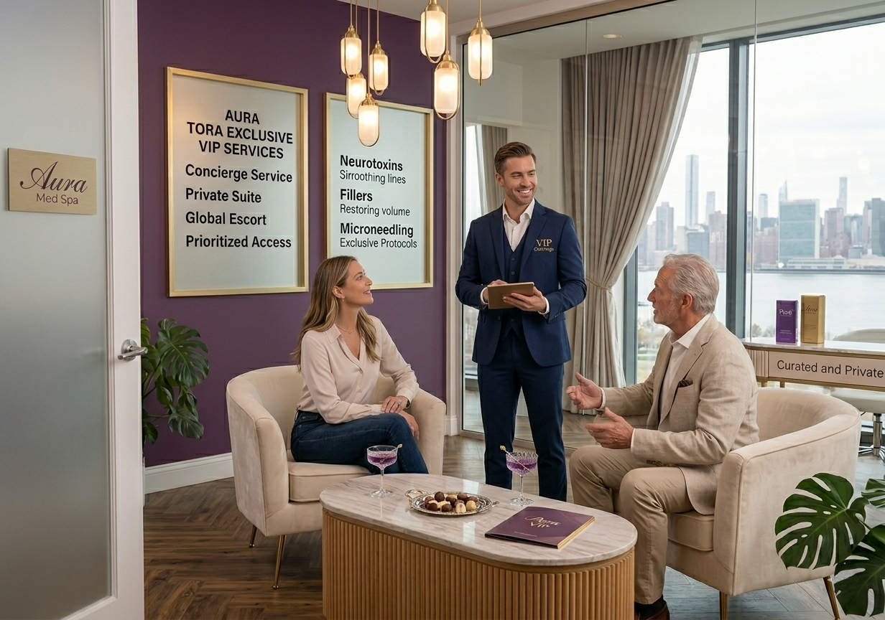

The Asset Pays for Itself
Four lines on the business case — together they typically pay back the deployment within 6–12 months.

Cost Savings
Eliminate fixed payroll at low-traffic points, reduce infrastructure (climate control, lighting, workstations) at unstaffed locations, and absorb absences centrally instead of covering them point by point.
Revenue Uplift
Capture interactions that previously ended in abandonment or deferral. Every customer who would have walked out now has a path to resolution. CSAT 4.5–5 drives retention and word-of-mouth.
Content & Advertising Monetisation
At rest, the kiosk plays scheduled content and advertising carousels per location (JPG, GIF, MP4). Owned or third-party campaigns. The asset becomes a communication medium, not just a service channel.
Talent Arbitrage
Concentrate your team in one lower-cost site, or move it to another country. The talent pool is no longer constrained by the location of the service point.
The seventh decision: the service point stops being a fixed cost and becomes optimised, flexible capacity.